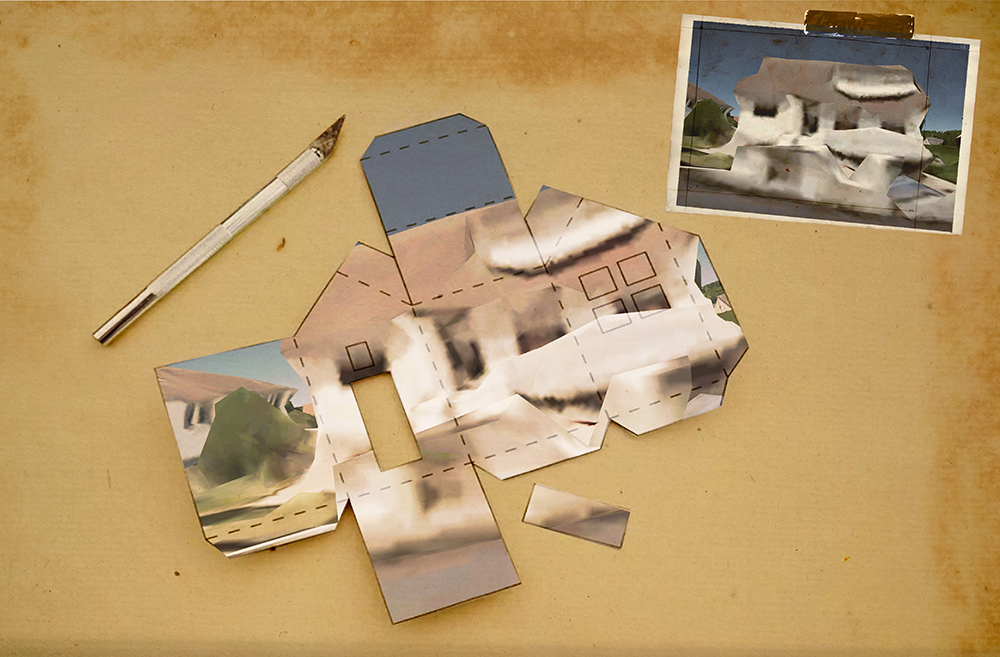
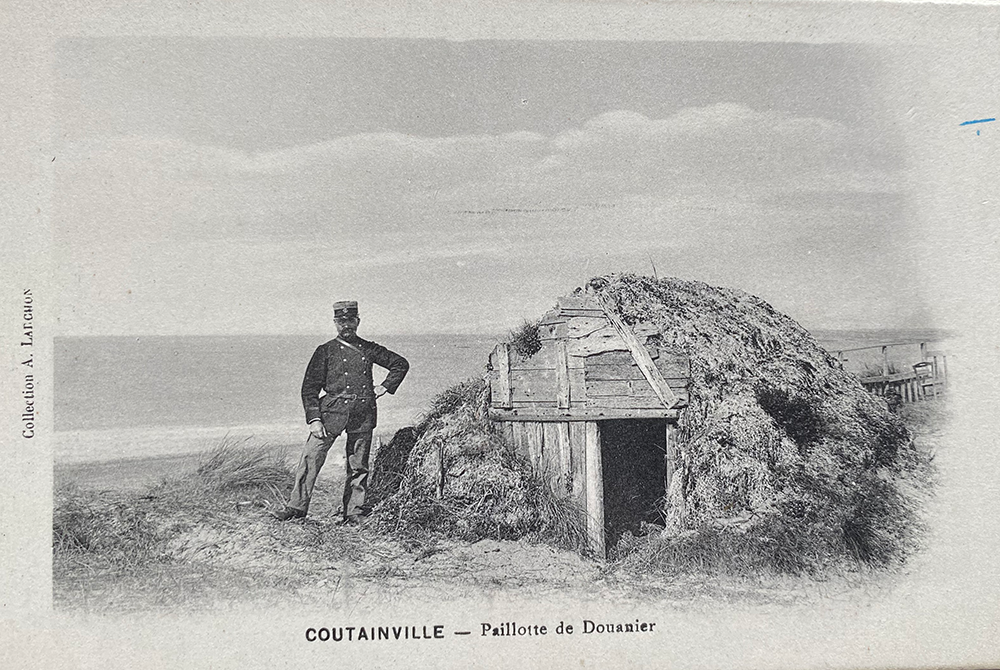
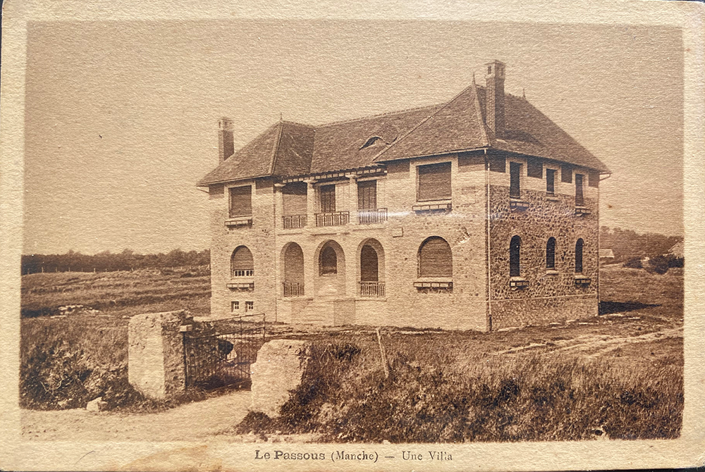
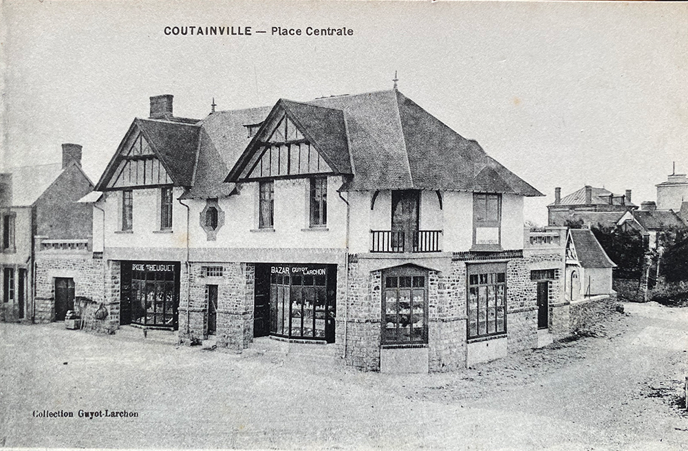
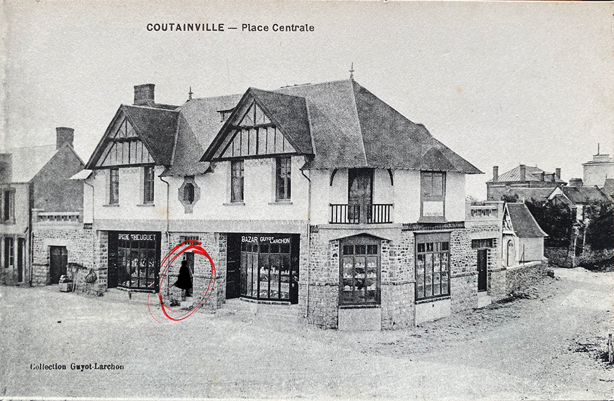
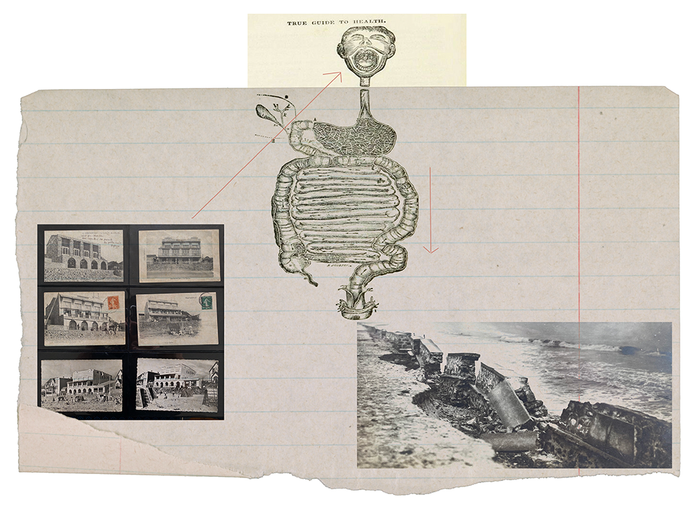
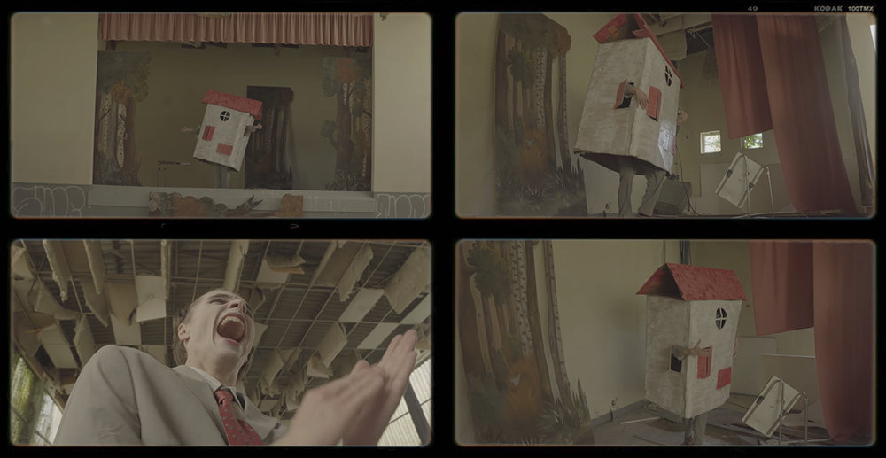

Movi(e)ng Home
Antoine Maisonneuve
Club ASAP 11
septembre 2026
Temps de lecture : 2 min
Cet article tente de rendre compte de la présentation d'Antoine Maisonneuve qui relevait peut être plus de la performance/conférence gesticulée que de la lecture d'un article écrit. Certaines libertés éditoriales ont été prises par l'équipe d'ASAP pour adapter le texte à la lecture.
Ah lala...Je suis heureux de vous retrouver, collègues fabulateurs, compères conteurs, arpètes de penseurs. Mais surtout je suis heureux de retrouver la chaleur des tripes d’un immeuble.
Parce que moi, depuis quelque temps, je vis loin de vous. J’ai quitté la réserve domestique de Paris. Je suis parti en safari, sur les côtes de la Manche.
Et depuis, je me rappelle au bon souvenir de la tripaille des immeubles parisiens. Toutes ces petites cavités où nous vivons, nous autres. microbiote, moi petite bactérie. Nous sommes la flore intestinale de l’architecture. Parce qu’un immeuble, finalement, ça ne vit pas tout seul.
Il faut nous. Bref… ceux qui habitent.
Et ça, les biologistes l’avaient déjà compris. Dans les années 70, Humberto Maturana et Francisco Varela développent une idée merveilleuse : l’autopoïèse. «Un système vivant est capable de se produire et de se maintenir lui-même à partir de ce qui l’entoure.» Et ce qui entoure un immeuble… c’est nous. Mieux : on l’habite.
Comme les milliards de bactéries qui habitent notre intestin. Elles nous aident surtout à… DI-GE-RER.
Et nous, habitants, nous faisons pareil avec nos maisons. Nous les nourrissons. Nous les transformons. Nous les réparons. Nous leur faisons subir des choses qu’aucun architecte n’avait prévues.
Et parfois… ces maisons nous digèrent. elles prennent nos matières grises. elles les malaxent. Et elles finissent par vous expulser… dans les cabinets...d’architecture.

Mais je ne vous juge pas, car moi, sans cabinet, j’ai fui la grande ville. Le grand air de la clim SNCF m’a porté jusque dans ce territoire étrange qu’on appelle… la petite Bretagne. Bon. C’est comme la Bretagne, mais en moins beau et surtout, sans TGV.
Ici, on trouve des espèces qu’on ne peut observer nulle part ailleurs. Des espèces rares. Des espèces protégées. Des espèces qui apparaissent principalement entre juin et septembre : Les fameux… zoos balnéaires.
Voyons voir. Domo Paillottus. Non. Trop commun.

Villa Urbexus. Non plus. Ah… attendez.

Voilà, là ! Le spécimen que j’ai observé l’autre jour en migration. La Domum Viventem.

Traduit d’une langue morte : la maison vivante. Une espèce magnifique. Une espèce rare. Une espèce que l’on commence malheureusement à ne plus voir qu’à l’état fossile.
J’ai eu la chance de l’observer dans son milieu naturel et je vous présente ici une série exceptionnelle de clichés. [De gauche à droite] :
Premier cliché : La maison en hibernation. Deuxième cliché : La maison en hibernation. C’est des images rarissime ! Troisième cliché : Encore la maison en hibernation... Quatrième cliché : Ah là ! Juste là ! Une bactérie qui s’échappe.

Après 325 jours d’hibernation ! Vous vous demandez sûrement pourquoi cette maison dort aussi longtemps. C’est très simple. Son microbiote n’est présent que 40 jours par an. 40 jours à la belle saison.
Le reste du temps… Elle est vide.
Et pourtant elle est vivante. Enfin… c’est ce qu’on supposais.
Parce qu’une maison sans habitants, c’est un peu comme un intestin sans bactéries. Ça peut encore avoir une belle apparence, mais ça ne digère plus grand-chose. Et alors, évidemment, on s’est demandé : Comment expliquer cette disparition du microbiote ?
Nous avons mené l’enquête. Et nous avons découvert un organisme particuNous particulièrement agressif. lièrement Une bactérie nouvelle. Une bactérie extrêmement résistante.

La bactérie spéculative.
Une bactérie probablement d’ordre financier. Elle ne mange pas la maison. Elle fait pire. Elle la transforme en objet. Elle retire tout ce qui faisait de cette maison un organisme. Et à la fin… il reste un produit. Un bien. Un placement. Un objet immobilier. Une maison morte. Un fossile parfaitement propre.
Et là, nous avons essayé d’intervenir. Nous avons cherché à réintroduire du microbiote. Nous avons fait appel aux populations autochtones. Dont je fais moi-même partie. Les anarchitectes de l’Estrange. Une tribu ancienne. Une tribu particulièreLes particulièrement mal organisée, mais très efficace pour produire des usages. Nos principaux rituels sont connus : SQUAT. TEUF. KARNAVAL.
Trois grandes cérémonies permettant à l’habitant de rappeler à l’architecture qu’il existe, mais ces rituels ont rencontré un prédateur redoutable. La chimie évangélique de l’immobilier. Une chimie capable de tout désinfecLa désinfecter. De tout normaliser. De tout nettoyer. Et surtout…d’éliminer les mauvaises bactéries. Les bactéries qui habitent. Alors les observations sont formelles. Le microbiote disparaît. La maison se fossilise.
Et nous avons fini par accepter l’idée que cette espèce était condamnée. La Domum Viventem appartient au passé. Un vieux dinosaure. Un vieux pote. À qui il faut dire adieu. Mais…il y a un problème.
Parce que quelque chose continue de bouger. Quelque chose continue de vibrer. Un bruit court. Des basses courent toujours.La fête n’est pas morte. Parce que certaines bactéries ont survécu. Elles ont quitté les maisons. Elles se sont accrochées ailleurs.
Et elles forment maintenant une flore éclatée. Un microbiote nomade. Et c’est peut-être là que se trouve notre dernière chance. Parce que le vivant a un avantage extraordinaire sur l’architecture :
il se réensauvage.
Et parfois… Il produit quelque chose de magnifique. Alors peut-être que nous devons arrêter de vouloir sauver la maison. Peut-être qu’il faut arrêter de voudevons vouloir restaurer le vieux spécimen. Peut-être qu’il faut accepter qu’il soit mort. Et regarder ce que font les bactéries après. Elles recommencent ailleurs. Elles inventent d’autres formes. D’autres manières d’habiter.
Des architectures produites par nos corps. Une architecture qui ne serait plus un objet à construire… mais une relation à fabriquer. Des pionniers qu’on appelait jadis anarchitectes avaient déjà commencé à expérimenter ces architectures in vivo. Ils ne construisaient pas toujours des bâtiments. Ils construisaient des situations.
Bref… ils fabriquaient du vivant. Et peut-être que c’est ça, finalement, notre métier de microbiote. Pas de construire la prochaine maison. Pas de sauver l’ancienne. Mais de créer les conditions dans lesquelles une maison peut redevenir vivante.

Alors aujourd’hui… nous, les bactéries, nous, la flore, nous, le microbiote, Qu’est-ce qui nous empêche de nous réensauvager ?
Après tout… une architecture vivante n’attend peut-être pas un architecte. Elle attend peut-être… qu’on l’habite.
Car la société transforme le loup en chien, et la maison est son animal le plus domestiqué.
L'ensemble des articles issus du club asap 02 sont disponibles ci-dessous:
| # | Titre | Auteur | |
|---|---|---|---|
| 110 | Fact-Checking & Reality Shifting | Louis Fiolleau | Club #11 |
| 111 | Hantologie critique de l'architecture | Lola Burdin & Noam Gueguen | Club #11 |
| 112 | Les Grands Travaux mitterrandiens | Louis Voyer | Club #11 |
| 113 | Liturgiques Excel-tiques | Sirine Ammour | Club #11 |
| 114 | Movi(e)ng Home | Antoine Maisonneuve | Club #11 |
| 115 | Mythes Historiques | Clarisse Protat | Club #11 |
| 116 | Habiter le trouble | Mateo Narejos | Club #11 |
| 117 | Objectification, concrétisation & rebond magique | Hugo Forté | Club #11 |
| 118 | Profaner la ville rationnelle | Marie Frediani | Club #11 |